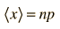

The Mean of the Binomial Distribution
The mean value of the binomial distribution is a = np where n is the number of events and p is the probability for each event.
| Binomial distribution: |  | Mean: |  |
This seems a very simple expression for the mean of such a complicated function, but the result agrees with our intuition. If you throw a die, hoping to throw a "2", then the probability is 1/6. If you throw it 6 times, you would expect to get one throw with value "2". The mean or expected value for 6 throws is (1/6)(6) = 1. For such a simple expression, the proof that it is in fact the mean is rather involved. The following approach is after Appendix D of Rohlf's Modern Physics.
From the definition of the mean using a distribution function, the binomial mean is

The goal is to reduce this expression to just np. Since the first term in the sum is zero, since x=0, we can replace the sum with a sum starting from 1.
Now cancel the common factor of x appearing in numerator and denominator.
Since the summation index is a dummy variable, we make the change of variables x' = x - 1.
Now factor out np.
The terms in the summation above are just the binomial function for n-1 trials, and you are summing it over all values of x - so that sum must be just 1. The expression then reduces to the desired expression for the mean.
|  | Mean of the binomial distribution. |
Since the Gaussian and Poisson distributions are approximations to the binomial distribution, this expression for the mean applies to them as well.
Applied statistics concepts
Reference
Rohlf
App. D.
| HyperPhysics*****HyperMath*****Algebra | R Nave |